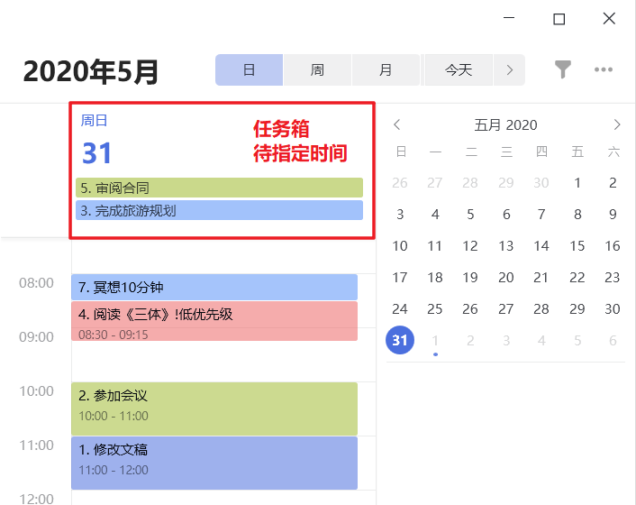

滴答清单使用分享#
知乎原文:
- 滴答清单使用分享 - 知乎
正文#
滴答清单是一款非常棒的时间管理工具，它还能当做团队协作、项目管理、笔记、习惯、番茄工具，大大地提升了我工作和学习的效率。
作为一个已经重度使用滴答清单半年多的老用户，我在入门时走了不少弯路，要将滴答清单真正地变成生产力工具，还需要掌握正确的方法。
我将滴答清单的核心功能归纳为3点：收集，执行，复盘。中间还会穿插一些我个人常用的小技巧。
本文侧重让读者快速理解滴答清单的大致使用方法，如想了解具体使用方法，推荐大家阅读官方的使用手册
一、快速收集#
添加任务是一切任务管理工具的开始，而滴答清单的收集功能是我见过最好用的！非常智能人性化，其他软件要添加一个任务或日程鼠标要点很多下，我选择放弃。
1、PC端添加任务的例子#
举一个在电脑端添加任务的例子，按下快捷键【Ctrl + Shift + A】呼出添加任务栏（这里演示所以基本功能）：
^bd9305
- 【明早10点】：它能自动识别时间，明早10点就会提醒你要做这件任务，还可写成【10点到11点】
- 【~工作】：把任务分类到工作清单下，你可以设置其他清单，eg：工作/个人/备忘/收藏/知识卡片
- 【@bonny】：如果有清单协作者，你就可以@他， 他会收到指派任务的提示
- 【跟客户面谈】：任务具体内容
- 【！高优先级】：设置优先级，当任务很多时，可以按优先级持续从清单里取任务执行
- 【#销售】：任务标签，方便对清单中的任务进一步归类，eg：会议/出差/文书/编程/外出
- 除此之外，你还可以按【tab键】补充任务的细节，支持markdown/插入图片和附件哦！
在滴答清单的其他端，android/ios等也是类似的操作方法，这里略去不讲
你还可以在[设置]里头设定添加任务的默认状态，例如 默认时间为今天，默认清单为收集箱，默认优先级为 低优先级等
下面是个gif图，展示了更多的操作细节

2、快速添加收藏/备忘/笔记#
同样的方法还可以快速添加收藏/备忘/笔记，比如：在知乎上看到一篇很好的文章：
由于可以灵活地设置重复任务，做课程表自然也不在话下，你甚至还可以将滴答清单当做简单的【知识卡片】工具，只需要将你的知识点用上述的方法收集起来，然后设置重复为【艾宾浩斯记忆法】，滴答清单就会按遗忘曲线的规律定期提醒你复习该知识点啦。
3、直接添加到收集箱#
经常性的，我们只是想要快速记录下一个任务/笔记，并不想输入具体的时间/清单分类 之类的信息，那么直接写简要的文字就可以了，它会默认归类到"收集箱"中，
添加任务如果没有指定清单，默认就会到【收集箱】中，比如你工作时灵光一闪，就可以先把想法记录下来，然后隔一段时间再去清空收集箱，我一般是每天清空一次。
清空收集箱的含义是：
- 如果能2分钟完成，就马上执行完成该任务；
- 否则，描述该任务执行的信息，如：执行时间/优先级/指派人，然后把该任务从收集箱中移动到对应的清单中，比如【工作】
清空收集箱：建议尽量先指定具体的执行时间（可以通过快捷键指定），然后再归类，如果没有指定时间，任务极有可能消失在茫茫任务海中 ^275424
二、专注执行#
前面收集了这么多任务之后，如何执行呢？这里以一天的场景为例子
1、先计划再行动#
一日之计在于晨，执行的第一步当然是做计划啦，做计划简而言之是将今天要完成的任务列出来。列出计划之后，就按时间点以及任务优先级去执行任务
（1）清单法#
清单视图可以分为两大块，前面是【今日任务】，后面是【按优先级】排序的任务。
相比日历法，清单法适用于那种工作经常被打断的人（比如管理人员经常要应对各种会议、突发情况，很难有一段完全属于自己不被打扰的时光）
此外，可以通过设置智能清单的模式，在一个"智能清单"里同时显示多个指定的清单（比如可以区别 工作时间清单（包含项目1/项目2/收集箱），非工作时间清单（包含：娱乐/购物/业余项目 等清单）
（2）日历法#
需先成为滴答清单付费会员
这个功能我觉得适合有许多确定日程的人使用（例如有大量的会议，出差，商务，课程）
对于学生，可以使用这个做成你的课程表
但在日常生活工作场景中，日历功能作用不是很大，因为大部分任务都是时间灵活的，不需要专门用日历功能去排期
- 从图片右下角的【待分配任务池里】拖动任务到【今日待分配】；
- 然后将【今日待分配】任务拖动到具体的时间点上，形成今日计划；
如果你想知道自己的时间花到哪了，日历会是不错的方法！
此外，如果今天存在剩余任务没完成，拖动任务到新的日期下即可，保证日事清，没有过期遗漏的任务
（3）看板法#
清单界面还可以切换为看板页面（看板可自定义）
* 适用场景
* 需要明确任务进度的，例如项目管理（未分配、进行中、验收中、已完成），软件开发（需求、队列、开发中、版本、bug） #todo 需要更好的例子
我个人使用列表模式为主，看板模式为辅。
列表模式：最近时间点/最高优先级的一个任务就是我要关注的
看板模式：查看单个项目的开发排期的时候会用到看板。在看板中做好计划（看板能够宏观地进行规划，不同任务进度一目了然），在列表中具体执行（列表像时间一样是线性的，人只能线性地一个一个处理任务）
2、切换场景#
当你的任务很多的时候，直接查看【所有任务】会比较乱，这个时候你需要根据场景切换自己的清单，比如工作时间，就切换到【工作】清单/文件夹下，上面的清单视图、日历视图都可以调整为只显示【工作】清单的内容。（也可以使用上文提到的"智能清单"）
通常[工作场景]我们会由多个[子清单]合并（通过智能清单）（当然如果工作内容较为简单，一个清单就可以搞定）。到具体某个项目的时候（比如有几个小时是给某个项目的），这个时候，切换到一个特定项目的任务清单下面即可，完成项目后，再从特定项目清单切换到工作清单。
3、专注番茄#
为了让执行任务的时候更加专注，你还可以使用滴答清单的番茄钟功能。如果你后期能够适应这种专注的节奏，那可以逐渐地不再使用番茄钟，但前期为了让自己养成习惯，还是坚持一下吧！
例如你计划读某本书2个小时，那么你就可以设定4个番茄钟（每个25分钟，每次休息5分钟），在番茄钟时间内，提醒自己专注的读书，不玩手机也不做其他跟读书无关的事情。
滴答清单的番茄页面很简洁，还有数据统计的功能，我一般用平板/手机立起来，放在桌面的一边倒计时，提醒自己该专注就专注，该休息就休息。
三、计划与复盘#
一天快结束时，是时候做个收尾了，我一般会做3个事情
- 清空今天的任务，尽量做到日事清，如果实在不能完成，做个总结，重新安排剩余任务的执行时间，同时提醒自己要对任务的执行时间要有合理的预估；
- 清空收集箱：一天下来，收集箱也会多出很多任务/笔记，将这些任务/笔记整理一下，做好安排，保证清空，无一遗漏。
- 看一下习惯的坚持情况，做个小结。
周/月/季度计划与复盘#
- 首先制定季度OKR，2-3个目标（Objective），每个目标对应3-4个关键指标（Key Result）。关键指标写在OKR的注释中。
- 每个目标下面还有对应的项目，项目通常每周制定一次计划、进行一次复盘（设置每周重复提醒）。制定的计划可以通过批量添加任务的小技巧添加到日程中。
- 项目是为了达成关键指标，可能跟1个或者多个关键指标关联。有些时候，你可以1个关键指标就对应一个项目。
制定年度或者月度计划同理，基本上都以周或者月为一个迭代周期（做计划，执行，最后复盘，再做新一轮的计划）
2020-12-15：
为了解决计划/复盘，以及项目任务和普通任务混乱的问题，引入以下解决方案
- 设置智能清单，区分工作和生活场景，但2个场景都包含"收集箱"
- 任务分两类，
- 一种项目类（计划拆分成的子任务）
- 一种提醒类（可以不归类到具体的计划中，平时只需要在收集箱里躺着就好，看心情也可以做归类）
- 项目计划
- 通用的，按周月季度划分的，写在单独的清单里头，并且包括在工作、生活场景中
- 由于内容通常较多，主要写在obsidian各年度计划中（而且不区分工作、个人，工作计划到时同步到公司相关文件中即可）#todo 这里可能今后要改进
- 也就是滴答清单这里的主要是==起提醒 + 说明要求的作用==
- 单个任务/单个清单/项目 的计划，通常以"高优先级"的方式列在清单中，高优先级任务/项目 控制在5个内
- 通用的，按周月季度划分的，写在单独的清单里头，并且包括在工作、生活场景中
2、习惯#
你可以看到自己每个习惯的坚持情况，还可以写一下你的总结。为了避免自己遗漏打卡，我会将每天打卡的截图发送给我的朋友，并设定惩罚机制。
四、进阶资料#
如果想要进一步了解滴答清单：
- 访问官网：www.dida365.com
- 跟邹小强学用滴答清单
- 链接：https://pan.baidu.com/s/1k1o_zVtVz_JwPqp96jEJfg 提取码：befz
-
支持正版：https://study.163.com/course/introduction/1005530008.htm
-
可以看我粗略整理的滴答清单相关内容：https://mubu.com/doc1UD9as6MJnr
五、技巧#
批量添加任务#
假设我们有如下的任务:
1. 修改文稿 !中优先级
2. ~工作 参加会议 !高优先级
3. ~日常 今天完成旅游规划
4. ~学习 阅读《三体》!低优先级
5. ~工作 审阅合同
6. ~日常 明天 示例任务 !高优先级 #实用
7. 每天早上8点冥想10分钟
【批量增加任务】直接复制所有任务到添加任务输入框，会出现提示
然后所有任务就添加好啦！值得说明的是，批量添加任务依然可以使用【智能识别】功能！比如~日常 明天 示例任务 !高优先级 #实用 它能够智能的设置好任务的【清单/日期/标签/优先级】，不过前提是对应的清单/标签已经存在。
此外，在PC端，如果没有设置时间，默认设置任务为今天。默认添加到收集箱。
显示时默认按照【时间】排序，你也可以按照【标题】，那样就是按【1234567】的顺序了
然后我们就可以在滴答清单上指定任务的执行时间啦！从今日任务箱中拖动任务进行安排即可，还可以设置任务的时长

六、FAQ#
什么时候用清单，什么时候用标签？#
同类任务很多（大于15）的时候用清单，否则用标签。这样可以让清单数量减少。
举个例子，你有一个娱乐清单，清单下面有标签【电影/电视剧/手游/动漫】，但是你又是一个电影迷，那这时最好进行“升级”
娱乐清单变成娱乐清单文件夹，电影变成一个清单，电影清单下分为【推理/科幻/恐怖/爱情/奇幻】标签，你可以将标签理解为是一个“分组”方式，列表按标签 排序就可以啦
标签的归类方法
| 工作 | 日程 | 娱乐 | 地点 | 场景 | 阅读 | 笔记 |
|---|---|---|---|---|---|---|
| 出差 | 生日 | 动漫 | 图书馆 | 购物 | 未读 | 日记 |
| 会议 | 纪念日 | 电影 | 家 | 打电话 | 在读 | 收藏 |
| 审阅 | 节日 | 电视剧 | 公司 | 电脑 | 已读 | 素材 |
| 跟进 | 路上 | 手机 | 密码 |